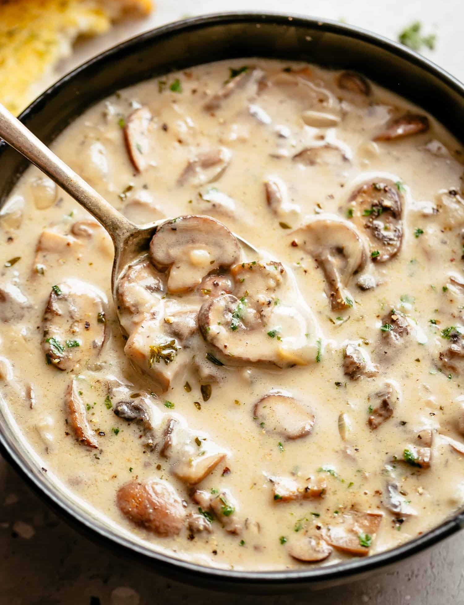

Съставки:
- Гъби
- Лук
- Чесън
- Масло
- Брашно
- Сметана
- Вино
- Бульон
Начин на приготвяне
Слагаме на котлона в дълбока тенджера масло и нарязан лук. Пържим докато лукът не придобие жълтеникав отенък. Тогава добавяме гъбите. Пържим още 10 минути със затворен похлупак. След това добавяме настърган чесън. Пържим още 3 минути. Добавяме брашно и разбъркваме. После добавяме малко вино и пак разбъркваме. След като покъкри около 2 минути, добавяме течен бульон и подправки. След като покипи супата 15 минути, спираме котлона. Взимаме 2 черпака от супата, пасираме ги заедно със сметаната и изсипваме тази смес в тенджерата със супата. Разбъркваме и супата е готова.